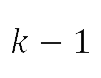
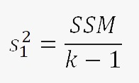

Ejemplos
Analisis de Varianza (Un factor)
Se desea determinar si hay alguna influencia en el miedo de las personas con respecto al virus COVID-19 dependiendo al medio de comunicacion que suelen frecuenta.
para eso de tomaron a 30 personas que vierean con frecuencia 3 diferentes medios de comunicacion y se le pidio que calificaran del 1 al 10 el temor que les daba el virus en cuestion obteniendo la siguiente tabla
| Medio de Televición | ||||
|---|---|---|---|---|
A |
B |
C |
||
| 2 | 4 | 5 | ||
| 9 | 8 | 1 | ||
| 4 | 5 | 7 | ||
| 1 | 3 | 5 | ||
| 8 | 7 | 5 | ||
| 2 | 4 | 5 | ||
| 2 | 2 | 8 | ||
| 9 | 3 | 10 | ||
| 1 | 8 | 7 | ||
| 10 | 8 | 1 | ||
| Total | 48 | 52 | 54 | 154 |
| Media | 4.8 | 5.2 | 5.4 | 5.133 |
1. El pirmer paso es calcular la suma de cuadrados del modelo y la residual
SSM = 1.867
SSR = 247.6
2. Los grados de libertad son:
para SSM son 2
para SSR son 37
3. Se calculan el ratio F
F = 0.1394
Esto esta por debajo del valor de region critica indicando que no se puede negar la hiposesis nula.Es decir para este ejemplo: No se puede determinar que el madio de comunicacion este influenciando
Formulas:
1. SSM =
SSR =
2.
para SSM: 
para SSR:
3.

Referencias:
Ejemplo inspirado en "Wapole, Ronald E, & Myers, Raymond H. (2012c). Probabilidad y estadística para ingeniería y ciencias (9ª ed.). Página 507. México, México: Pearson Educación."
Analisis de Varianza (Un factor)
Parte de un estudio realizado en Virginia Tech se diseño para medir los niveles de actividad de la fosfatasa alcalina sérica(en unidades de Bessey-Lowry) en niños con trastornos obsesivos compulsivos que recibían terapia de anticonvulsicantes bajo el cuidado de un médico privado.
Se reclutaron 45 sujetos para el estudio y se clasificaron en cuatro grupos de medicamentos:
G-1: Control(no recibieron anticonvulsivantes ni tenían historia de trastornos convulsivos)
G-2: Fenobarbital
G-3: Carbamazepina
G-4: Otros anticonvulsivantes
De las muestras de sangre tomadas a cada sujeto se determinó el nivel de actividad de la fosfatasa alcanina sérica y se registró tal como se observa en la tabla 13.4.
Pruebe la hipótesis de que, a un nivel de significancia de 0.05, el nivel promedio de actividad de la fosfatasa alcalina sérica es el mismo para los cuatro grupos de medicamentos.
| G1 | G2 | G3 | G4 | |
|---|---|---|---|---|
| 49.20 | 97.50 | 97.07 | 62.10 | 110.60 |
| 44.54 | 105.00 | 73.40 | 94.95 | 57.10 |
| 45.80 | 58.05 | 68.50 | 142.50 | 117.60 |
| 95.84 | 86.60 | 91.85 | 53.00 | 77.71 |
| 30.10 | 58.35 | 106.60 | 175.00 | 150.00 |
| 36.50 | 72.80 | 0.57 | 79.50 | 82.90 |
| 82.30 | 116.70 | 0.79 | 29.50 | 111.50 |
| 87.85 | 45.15 | 0.77 | 78.40 | |
| 105.00 | 70.35 | 0.81 | 127.50 | |
| 95.22 | 77.40 | |||
1. El pirmer paso es calcular la suma de cuadrados del modelo y la residual
SSM = 13939
SSR = 53376
2. Los grados de libertad son:
para SSM son 37
para SSR son 41
3. Se calculan el ratio F
F = 3.57
Decisión: Rechazar H0 y concluir que los niveles promedio de la actividad de fosfata alcalina del suero para los cuatro grupos no son todos igualesFormulas:
1. SSM =
SSR =
2.
para SSM:
para SSR:
3.
Referencias:
Ejercicio propuesto en "Wapole, Ronald E, & Myers, Raymond H. (2012c). Probabilidad y estadística para ingeniería y ciencias (9ª ed.). Página 514. México, México: Pearson Educación."
Analisis de Varianza (Dos factores )
En un experimento realizado para determinar cuál de 3 sistemas de misiles distintos es preferible, se midió la tasa de combustión del propulsor para 24 arranques estáticos.
Se emplearon 4 tipos de combustible diferentes y el experimento generó observaciones duplicadas de las tasas de combustión para cada combinación de los tratamientos.
| Sistema de misiles | tipo de impulsor | |||
|---|---|---|---|---|
| b1 | b2 | b3 | b4 | |
| a1 | 34.4 32.7 |
30.1 32.8 |
29.8 26.7 |
29.0 28.9 |
| a2 | 32.0 33.2 |
30.2 29.8 |
28.7 28.1 |
27.6 27.8 |
| a3 | 28.4 29.3 |
27.3 28.9 |
29.7 27.3 |
28.8 29.1 |
1. Se utiliza la fórmula de la suma de cuadrados el análisis de varianza.

2. De lo anterior y teniendo claro que:
Hipotesis Nulas
a) H'0: α1 = α2 = α3 = 0
b) H''0 : β1 = β2 = β3 = β4 = 0.
c) H''0 : (αβ)11 = (αβ)12 = ··· = (αβ)34 = 0
Hipotesis Alternativas
a) H'1: Al menos una de las αi no es igual a 0.
b) H''1 : Al menos una de las βj no es igual a 0.
c)H'''1 : Al menos una de las (αβ) ij no es igual a 0.
Al comparar con el valor crítico f 0.05(1, 12) = 4.75, se encuentra que f 1 es significativo. De hecho, el valor P es menor que 0.01. Así, el primer contraste indica que se rechaza la hipótesis Como f 2 "<" 4.75, las tasas medias de combustión del primer y segundo sistemas no son significativamente diferentes.Formulas
1. La formula para las veiansas (cuadrado medio) seran: